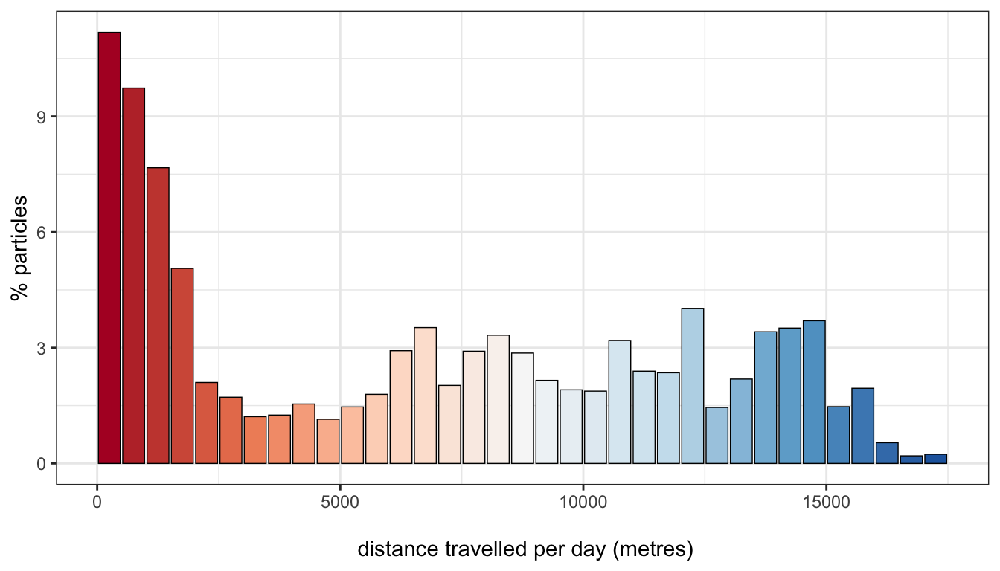
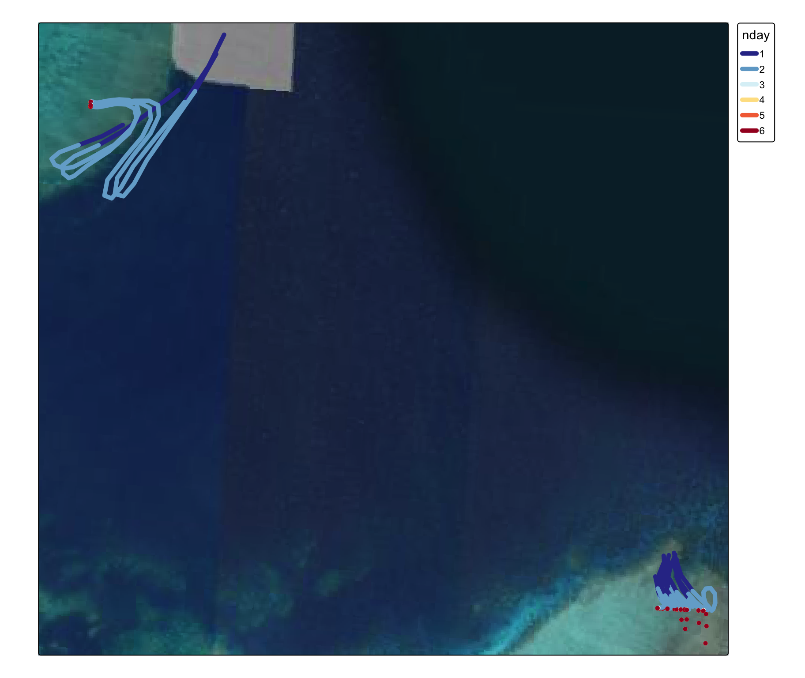

Ocean Parcels central GBR
George Roff
2024-08-20
1. oceanparcels
Reproducible code from Ani et al (2024) “Connectivity modelling identifies sources and sinks of coral recruitment within reef clusters” Scientific Reports 13564
Code updated to work with OceanParcels 3.0.4
GBR1 hydrodynamic data from 30/11/15 to 31/12/15
5 day run duration
# -- coding utf-8 --
"""
Modified code from nestedfield_2d.py (via https://zenodo.org/doi/10.5281/zenodo.10638015)
Code works with Parcels 3.0.4 and uses with a subset of GBR1 hydrodynamic data for 2015 spawning
Preliminary, to be validated
"""
from parcels import Field, NestedField, FieldSet, ParticleSet, JITParticle, Variable, ParticleFile, StatusCode, AdvectionRK4
import numpy as np
import datetime
from datetime import datetime
import pandas as pd
from datetime import timedelta as delta
import netCDF4
from glob import glob
import argparse
import os
os.environ['USE_PYGEOS'] = '0'
import geopandas as gpd
from shapely.geometry import Point
# Initialize the argument parser
parser = argparse.ArgumentParser()
# Define the expected arguments
parser.add_argument('cluster', type=str, help='Cluster identifier')
parser.add_argument('year', type=str, help='Year of the release')
parser.add_argument('day', type=str, help='Day of the release')
parser.add_argument('spatial_data', type=str, help='Path to spatial data')
# Parse the arguments
args = parser.parse_args()
cluster='Moore'
num_release = 181 #total release time in minutes
int_release = 20 #time interval of particle release in minutes
num_particles = 10 #total number of released particles per site
run_duration = 1 #duration of model run in days
out_dt = 1 #output timestep in hours
run_dt = 10 #run timestep in minutes
depth0 = -2.25 #depth at which particles are released
#create GBR1 fieldset
data_path = '/Users/rof011/Downloads/GBR_connectivity/Oceanparcels/'
# File paths
files = [
'/Users/rof011/Downloads/GBR_connectivity/Oceanparcels/Moore_uv_2015-11-30.nc',
'/Users/rof011/Downloads/GBR_connectivity/Oceanparcels/Moore_uv_2015-12-01.nc',
'/Users/rof011/Downloads/GBR_connectivity/Oceanparcels/Moore_uv_2015-12-03.nc',
'/Users/rof011/Downloads/GBR_connectivity/Oceanparcels/Moore_uv_2015-12-04.nc',
'/Users/rof011/Downloads/GBR_connectivity/Oceanparcels/Moore_uv_2015-12-05.nc',
'/Users/rof011/Downloads/GBR_connectivity/Oceanparcels/Moore_uv_2015-12-06.nc',
'/Users/rof011/Downloads/GBR_connectivity/Oceanparcels/Moore_uv_2015-12-07.nc',
'/Users/rof011/Downloads/GBR_connectivity/Oceanparcels/Moore_uv_2015-12-08.nc',
'/Users/rof011/Downloads/GBR_connectivity/Oceanparcels/Moore_uv_2015-12-09.nc',
'/Users/rof011/Downloads/GBR_connectivity/Oceanparcels/Moore_uv_2015-12-10.nc',
'/Users/rof011/Downloads/GBR_connectivity/Oceanparcels/Moore_uv_2015-12-11.nc',
'/Users/rof011/Downloads/GBR_connectivity/Oceanparcels/Moore_uv_2015-12-12.nc',
'/Users/rof011/Downloads/GBR_connectivity/Oceanparcels/Moore_uv_2015-12-13.nc',
'/Users/rof011/Downloads/GBR_connectivity/Oceanparcels/Moore_uv_2015-12-14.nc',
'/Users/rof011/Downloads/GBR_connectivity/Oceanparcels/Moore_uv_2015-12-15.nc',
'/Users/rof011/Downloads/GBR_connectivity/Oceanparcels/Moore_uv_2015-12-16.nc',
'/Users/rof011/Downloads/GBR_connectivity/Oceanparcels/Moore_uv_2015-12-17.nc',
'/Users/rof011/Downloads/GBR_connectivity/Oceanparcels/Moore_uv_2015-12-18.nc',
'/Users/rof011/Downloads/GBR_connectivity/Oceanparcels/Moore_uv_2015-12-19.nc',
'/Users/rof011/Downloads/GBR_connectivity/Oceanparcels/Moore_uv_2015-12-20.nc',
'/Users/rof011/Downloads/GBR_connectivity/Oceanparcels/Moore_uv_2015-12-21.nc',
'/Users/rof011/Downloads/GBR_connectivity/Oceanparcels/Moore_uv_2015-12-22.nc',
'/Users/rof011/Downloads/GBR_connectivity/Oceanparcels/Moore_uv_2015-12-23.nc',
'/Users/rof011/Downloads/GBR_connectivity/Oceanparcels/Moore_uv_2015-12-24.nc',
'/Users/rof011/Downloads/GBR_connectivity/Oceanparcels/Moore_uv_2015-12-25.nc',
'/Users/rof011/Downloads/GBR_connectivity/Oceanparcels/Moore_uv_2015-12-26.nc',
'/Users/rof011/Downloads/GBR_connectivity/Oceanparcels/Moore_uv_2015-12-27.nc',
'/Users/rof011/Downloads/GBR_connectivity/Oceanparcels/Moore_uv_2015-12-28.nc',
'/Users/rof011/Downloads/GBR_connectivity/Oceanparcels/Moore_uv_2015-12-29.nc',
'/Users/rof011/Downloads/GBR_connectivity/Oceanparcels/Moore_uv_2015-12-30.nc',
'/Users/rof011/Downloads/GBR_connectivity/Oceanparcels/Moore_uv_2015-12-31.nc',
]
filenames = {'U': {'lon': files[0], 'lat': files[0], 'depth': files[0], 'data': files},
'V': {'lon': files[0], 'lat': files[0], 'depth': files[0], 'data': files}}
variables = {'U': 'u',
'V': 'v'}
dimensions = {'U': {'lon': 'longitude', 'lat': 'latitude', 'depth': 'zc', 'time': 'time'},
'V': {'lon': 'longitude', 'lat': 'latitude', 'depth': 'zc', 'time': 'time'}}
fieldset = FieldSet.from_netcdf(filenames, variables, dimensions, chunksize = 'auto', allow_time_extrapolation = True)
#create RECOM fieldset
data = '/Users/rof011/Downloads/GBR_connectivity/datafiles/Moore_2015_simple.nc'
dimensionsU={'lon':'longitude', 'lat':'latitude', 'depth': 'zc', 'time':'time'}
dimensionsV={'lon':'longitude', 'lat':'latitude', 'depth': 'zc', 'time':'time'}
U_recom=Field.from_netcdf(data, ('U_recom','u'), dimensionsU, fieldtype='U', chunksize = 'auto', allow_time_extrapolation = True)
V_recom=Field.from_netcdf(data, ('V_recom','v'), dimensionsV, fieldtype='V', chunksize = 'auto', allow_time_extrapolation = True)
#add RECOM fieldset to GBR fieldset
fieldset.add_field(U_recom)
fieldset.add_field(V_recom)
#create nested field
U=NestedField('U', [fieldset.U_recom, fieldset.U])
V=NestedField('V', [fieldset.V_recom, fieldset.V])
nest=FieldSet(U, V)
f = netCDF4.Dataset(data) #extract RECOM coordinates
lat = f.variables['latitude']
lon = f.variables['longitude']
latvals = lat[:]; lonvals = lon[:]
# a function to find the index of the point closest
# (in squared distance) to a given latlon value.
def getclosest_ij(lats,lons,latpt,lonpt):
# find squared distance of every point on grid
dist_sq = (lats-latpt)**2 + (lons-lonpt)**2
# 1D index of minimum dist_sq element
minindex_flattened = dist_sq.argmin()
# Get 2D index for latvals and lonvals arrays from 1D index
return np.unravel_index(minindex_flattened, lats.shape)
#read geospatial data
coord = gpd.read_file('/Users/rof011/Downloads/GBR_connectivity/datafiles/MooreCluster_SpatialPolygons.gpkg')
np.random.seed(10)
#a function to get random points in a polygon
def random_point_in_poly(poly):
within = False
while not within:
x = np.random.uniform(poly.bounds[0], poly.bounds[2])
y = np.random.uniform(poly.bounds[1], poly.bounds[3])
within = poly.contains(Point(x, y))
return Point(x,y)
Lat, Lon = [], []
for i in range(num_particles):
coord['Point' + str(i)] = coord['geometry'].apply(random_point_in_poly)
Lat = [*Lat,*list(coord['Point'+str(i)].y)]
Lon = [*Lon,*list(coord['Point'+str(i)].x)]
releases = {
2015: {
1: datetime(2015, 11, 30, 20, 0),
2: datetime(2015, 12, 1, 20, 0),
3: datetime(2015, 12, 2, 20, 0)
}
}
t0 = releases[2015][1]
res = [t0 + delta(minutes=idx) for idx in range(0,num_release,int_release)]
release_time = [i for i in res for n in range(0,len(coord))] #list containing the initial conditions of all released particles
depth = [depth0] * len(Lat)
#create a particle set with the nested field
pset = ParticleSet.from_list(nest, pclass=JITParticle,
lon = Lon,
lat = Lat,
depth = depth,
time = release_time)
for p in pset:
yi, xi = getclosest_ij(latvals, lonvals, p.lat, p.lon)
p.xi = np.array([xi], dtype=np.int32)
p.yi = np.array([yi], dtype=np.int32)
def DeleteParticle(particle, fieldset, time): #delete particles that are out of bounds
particle.delete()
# Define the CheckOutOfBounds function for particles that go out of bounds
def CheckOutOfBounds(particle, fieldset, time):
if particle.state == StatusCode.ErrorOutOfBounds:
particle.delete()
kernels = pset.Kernel(AdvectionRK4) + pset.Kernel(CheckOutOfBounds)
# Use the error handling function during execution
output_file = pset.ParticleFile(name=f'{args.cluster}outputs{args.year}{args.cluster}_trajectory_{args.year}_d{args.day}2d.zarr',
outputdt=delta(hours=out_dt))
pset.execute(kernels, runtime=delta(days=run_duration), dt=delta(minutes=run_dt),
output_file=output_file)
output_file.close()additional code to export zarr to .csv
(python_xarray_convert.py)
import xarray as xr
import pandas as pd
zarr_path = '/Users/rof011/Mooreoutputs2015Moore_trajectory_2015_d12d.zarr_mon20th.zarr/'
zarr_path = '/Users/rof011/oceanparcels_seeding/'
ds = xr.open_zarr(zarr_path)
df = ds.to_dataframe().reset_index()
df_filtered = df[['obs', 'trajectory', 'lon', 'lat', 'time']]
df_filtered.to_csv('oceanparcels_seeding.csv', index=False)2. Particle tracks
Import particle tracks and points
library(tidyverse)
library(sf)
library(tmap)[slight sf hack to create linestrings from
points to get particle trajectories, create minimally valid
linestring by duplicating point if npoints
< 2]
moore_habitats <- read_sf("/Users/rof011/spatialtools/data/MooreCluster_SpatialPolygons.gpkg", quiet=TRUE)
ocean_parcels_particles <- read.csv("/Users/rof011/spatialtools/data/trajectories_obs_data.csv") |>
drop_na(lon, lat) |>
st_as_sf(coords=c("lon", "lat")) |>
st_set_crs(4326) |>
st_transform(20353) |>
mutate(time=ymd_hms(time)) |>
mutate(day=day(time))
ocean_parcels_particles <- ocean_parcels_particles |>
mutate(nday = ifelse(day==30, 0, day)+1) |>
mutate(trajectory=as.numeric(trajectory), nday=as.numeric(nday)) |>
st_make_valid() %>%
arrange(trajectory, nday, time)
add_next_nday_point <- function(data) {
max_nday <- max(data$nday) # Identify the maximum `nday` for the trajectory
data %>%
group_by(nday) %>%
summarise(
geometry = {
current_nday <- unique(nday) # Get the unique value of `nday` in this group
combined_geom <- st_combine(geometry)
if(current_nday < max_nday) {
next_point <- data %>%
filter(nday == current_nday + 1) %>%
slice(1) %>%
pull(geometry)
combined_geom <- st_combine(c(combined_geom, next_point))
}
st_cast(combined_geom, "LINESTRING")
},
.groups = "drop"
)
}
# Apply the function to each trajectory and combine results
ocean_parcels_lines_tmp <- ocean_parcels_particles %>%
group_by(trajectory) %>%
group_modify(~ add_next_nday_point(.x)) %>%
ungroup() %>%
st_as_sf()
# Function to ensure a LINESTRING has at least two points by duplicating the last point if necessary
ensure_two_points <- function(geometry) {
coords <- st_coordinates(geometry)
if (nrow(coords) < 2) {
coords <- rbind(coords, coords)
}
st_linestring(coords)
}
ocean_parcels_lines <- ocean_parcels_lines_tmp %>%
dplyr::mutate(geometry = purrr::map(geometry, ensure_two_points)) %>% # Use purrr::map to retain the list-column structure
dplyr::mutate(geometry = st_zm(geometry)) %>% # Drop the Z axis
st_sf() |>
st_set_crs(20353) # Recreate the crsVisualise ~200 subset tracks across the 5 days
library(stars)
set.seed=1
# set recom grid
nc_data <- stars::read_ncdf("/Users/rof011/GBR_connectivity/datafiles/Moore_2015_simple.nc") |>
st_as_stars()
lat_dims <- nc_data |> st_as_stars() |> st_get_dimension_values(2) |> as.data.frame() |> t() |> as.data.frame() |> slice(1) |> as.numeric()
lon_dims <- nc_data |> st_as_stars() |> st_get_dimension_values(1) |> as.data.frame() |> slice(1) |> as.numeric()
lat_range <- range(lat_dims)
lon_range <- range(lon_dims)
bbox <- st_bbox(c(xmin = lon_range[1], ymin = lat_range[1], xmax = lon_range[2], ymax = lat_range[2]), crs = st_crs(4326))
cellsize <- c(diff(lon_range) / (length(lon_dims) - 1), diff(lat_range) / (length(lat_dims) - 1))
grid_sf <- st_make_grid(st_as_sfc(bbox), cellsize = cellsize, square = TRUE) |> st_transform(20353) |> st_sf()
#subset ~200 random tracks
subset_particles <- ocean_parcels_particles %>%
dplyr::filter(trajectory %in% seq(1,nrow(ocean_parcels_lines),round(nrow(ocean_parcels_lines)/200))) |>
arrange(trajectory,nday)
# Filter the tracks based on trajectory and then ensure valid LINESTRING geometries
subset_tracks <- ocean_parcels_lines %>%
dplyr::filter(trajectory %in% seq(1, nrow(ocean_parcels_lines), round(nrow(ocean_parcels_lines) / 200)))
tmap_mode("plot") +
tm_basemap("Esri.WorldImagery") +
tm_shape(moore_habitats) +
tm_polygons(fill="habitat",
lwd=0,
fill.legend = tm_legend_hide(),
fill.scale=tm_scale_categorical(values="brewer.pastel1"),
fill.alpha=0.2) +
tm_shape(subset_tracks, is.main=TRUE) +
tm_lines(col="nday",
lwd=4,
popup.vars=c("trajectory", "nday"),
col.scale=tm_scale_continuous(values="-rd_yl_bu")) +
tm_shape(subset_particles) +
tm_lines(col="nday",
lwd=0,
popup.vars=c("trajectory", "nday"),
size=0.2,
col.scale=tm_scale_continuous(values="-rd_yl_bu")) #+#tm_shape(sf_grid) +
# tm_polygons(col="red")Compare two contrasting particle tracks:
# subset two particles & tracks
p1_particles <- ocean_parcels_particles |> filter(trajectory %in% c(1))
p100_particles <- ocean_parcels_particles |> filter(trajectory %in% c(100))
p1_tracks <- ocean_parcels_lines |> filter(trajectory %in% c(1))
p100_tracks <- ocean_parcels_lines |> filter(trajectory %in% c(100))
particle_1 <- tm_basemap("Esri.WorldImagery") +
tm_shape(p1_particles) +
tm_dots(fill="nday",
size=0.05,
fill.legend = tm_legend_hide(),
fill.scale=tm_scale_continuous(values="-rd_yl_bu")) +
tm_shape(p1_tracks) +
tm_lines(col="nday",
lwd=4,
col.legend = tm_legend_hide(),
col.scale=tm_scale_continuous(values="-rd_yl_bu")) +
tm_options(set.view=c(146.24, -16.9, 1))
particle_100 <- tm_basemap("Esri.WorldImagery") +
tm_shape(p100_particles) +
tm_dots(fill="nday",
size=0.05,
fill.scale=tm_scale_continuous(values="-rd_yl_bu")) +
tm_shape(p100_tracks) +
tm_lines(col="nday",
lwd=4,
col.legend = tm_legend_hide(),
col.scale=tm_scale_continuous(values="-rd_yl_bu")) +
tm_options(set.view=c(146.24, -16.9, 11))
tmap_arrange(particle_1, particle_100, ncol=2, sync=TRUE)## Tiles from Esri.WorldImagery will be projected so details (e.g. text) could appear blurry
## Tiles from Esri.WorldImagery will be projected so details (e.g. text) could appear blurryCalculate track lengths
ocean_parcels_lines <- ocean_parcels_lines %>%
mutate(length_m = st_length(geometry))
ocean_parcels_movement <- ocean_parcels_lines |>
mutate(beach = ifelse(length_m < units::set_units(10,"m"), "beach", "dispersed"))View the total distances per particle per day (500m distance bins):
ocean_parcels_movement_m <- ocean_parcels_movement |>
as.data.frame() |>
mutate(length_m = as.numeric(length_m)) |>
mutate(length_bin = cut(length_m,
breaks = seq(0, max(length_m, na.rm = TRUE) + 500, by = 500),
include.lowest = TRUE,
right = FALSE,
labels = FALSE)) |>
mutate(length_bin = (length_bin *500) - 250)
ocean_parcels_movement_binn <- ocean_parcels_movement_m |>
group_by(length_bin) |>
summarise(count=n()) |>
mutate(proportion=count/nrow(ocean_parcels_movement_m) *100)
ggplot() + theme_bw() +
geom_col(data=ocean_parcels_movement_binn, aes(x=length_bin, y=proportion, fill=as.numeric(length_bin)),
color="black", linewidth=0.25, show.legend=FALSE) +
scale_fill_distiller(palette = "RdBu", direction = 1) +
xlab("\n distance travelled per day (metres)") +
ylab("% particles")
Some particles are moving <500m, so:
- create a “beached” category where movement is <10 metres in 1 day
- for each particle, calculate distance per day
- if <10m, classify “beached”, if >10m, classify “dispersed”
Calculate the proportion of days where the entire day is “beached” (i.e. <10m distance movement):
beached_summary <- ocean_parcels_movement %>%
as.data.frame() %>%
group_by(trajectory) %>%
summarise(beached_count = sum(beach == "beach"), dispersed_count = sum(beach == "dispersed")) |>
group_by(trajectory) %>%
mutate(total_count=sum(beached_count) + sum(dispersed_count))
ggplot() +
theme_bw() +
geom_histogram(data = beached_summary,
aes(x = beached_count, fill = as.factor(beached_count)),
color = "black",
linewidth = 0.5,
show.legend=FALSE,
binwidth = 1) + # Set binwidth to 1 for discrete data
scale_y_log10() +
scale_x_continuous(breaks = seq(1, 6, 1)) +
scale_fill_brewer(palette = "Reds") +
xlab("\n number of days with <10m movement per particle release") +
# Add geom_text to display count labels above bars
geom_text(data = beached_summary,
aes(x = beached_count,
y = ..count..,
label = ..count..),
stat = "bin",
vjust = 2, # Adjust the vertical position of the labels
size = 3) + # Adjust the size of the text
xlab("\n number of days with <10m movement per particle release")
Majority of particles show free dispersal, limited number (175 particles, ~5.5%) show beaching of 1-6 days
Isolate the particles > 4 days and visualise:
beached_summary_5more <- beached_summary |> filter(beached_count>3)
# subset two particles & tracks
beached_tracks <- ocean_parcels_lines |> group_by(trajectory) |> dplyr::filter(trajectory %in% beached_summary_5more$trajectory)
beached_particles <- ocean_parcels_particles |> group_by(trajectory) |> dplyr::filter(trajectory %in% beached_summary_5more$trajectory)
tm_basemap("Esri.WorldImagery") +
tm_shape(beached_tracks) +
tm_lines(col="nday",
lwd=5,
popup.vars=c("trajectory", "nday"),
col.legend = tm_legend(legend.text.size = 0.6,
legend.height=1.1,
item.height=1.1),
col.scale=tm_scale_continuous(values="-rd_yl_bu")) #+## Tiles from Esri.WorldImagery will be projected so details (e.g. text) could appear blurry
# tm_shape(beached_particles) +
# tm_dots(fill="nday",
# lwd=0,
# popup.vars=c("trajectory", "nday"),
# size=0.2,
# fill.scale=tm_scale_categorical(values="-rd_yl_bu"),
# fill.legend = tm_legend_hide())